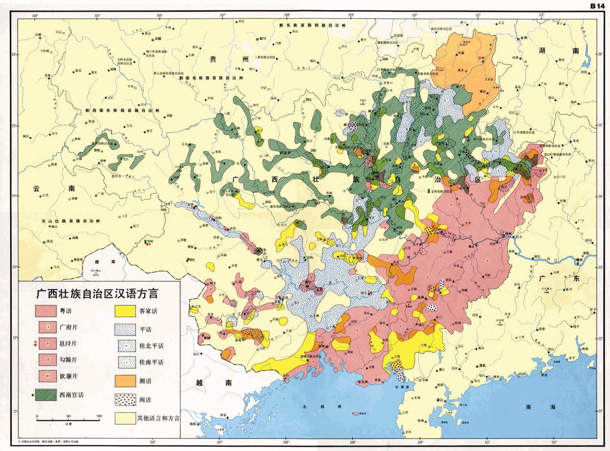

“宝岛统帅放话了，还特意用了‘北京当局’字眼强调‘对等’原则”，柴禾妞念着情报，“看来只要南京还不改名，南北朝对峙的局面就不会结束，‘北京当局’在发布涉及长三角一体化进程相关公告的时候已经‘自我矮化’了”。
“那东京改不改名呢？”郭春海评价，“就看国际化大都市华语第一精日论坛的氛围，还是更喜欢三国演义，尤其是光荣版”。
“名不正则言不顺，言不顺则事不成”，柴禾妞引经据典，“除了‘钟声’继续更新拼月票之外，‘钧声’也开新书连载了，看来中统军统之间的斗争很激烈嘛，不知道国统那边什么动静”。
“你看国台办继续坚持养寇自重不动摇的态度就知道了”，郭春海提醒，“看评论说‘郭同欣’这帐号听起来就没什么气魄，又不是‘声’字辈，上不去首页推荐混不成白金写手”。
“上梁不正下梁歪，玄学碰瓷已经成为兲朝基本国策了”，柴禾妞改口，“这么说来，难道‘俞强声’准备代表色目屠刀之下的全球基督徒强硬的发声？而‘俞正声’还要兼任梵蒂冈驻北京当局大使代表基督教正统发声不成？”
“有本地情报了”，郭春海提醒柴禾妞，“九省通衢の煎蛋正在引经据典”。
“康宁翰定律和墨菲定律”，柴禾妞保存情报，“啥意思？”
“字面意思你肯定看懂了，而字里行间的意思，需要结合色目情报掮客所炫耀的幕后黑手一贯作风理解”，郭春海提醒，“不外乎幕后黑手有诈胡权，还金口玉言并言出法随，专门散布瘟疫饥荒战争的啥‘死神’爱上了什么废柴，就赐予其超凡运气，授予硕士学位，并提供配套的团队，唤作‘叹息的亡灵’之类”。
“伤寒马力与千岛湖之试炼吖”，柴禾妞想起来了，“连十九年七闰都不知道就能担任钦定扫帚星乌鸦嘴，胡说八道都有幕后黑手指使群众演员圆谎”。
“这是本地新闻”，郭春海再次提醒，“俞强声虽然早就跑路了，但是俞正声可是担任过大梁国摄政呢，驻地就在九省通衢”。
“你是说，梵蒂冈会选择九省通衢作为突破口？”柴禾妞猜测，“也对，幕后黑手不止一个，色目中央如此嚣张的投放新时代王冠叫嚣着种族灭绝，基督徒怎么可能会放弃抵抗引颈就戮”。
“也许吧”，郭春海不置可否，“结果如何就看前台招牌活广告的‘言灵’对决了，其实体现了幕后黑手之间的‘武德’对决”。
“说起来奇怪，或者是我还不太明白游戏规则”，柴禾妞问，“俞强声跑路了，为啥对俞正声一点影响都没有还一路青云直上主席台呢？”
“体制内的游戏规则就是‘忠孝不能两全’吖”，郭春海解释，“无论是苏修特色的披了红皮的东正教，还是兲朝特色披了红皮的儒教，传承方式都一样，不是教父教子，就是座师门徒”。
“一般都是担任‘秘书’职务的亲信吧？”柴禾妞虽然接触体制相关内幕不多，但是在市面上其它八卦当中总能找到部分相关爆料，“记得看过色目情报掮客网络直播的兲朝特色豪门恩怨伦理剧，说领导只有个闺女，于是退了宁可提拔秘书也不提拔侄子。否则按照当初邓丕平拉拢豪门贵种时许诺的‘跟咱混有韭菜吃，每家一个副部级’的政治规矩和组织纪律，将来自家闺女往哪里摆？没准还会被祠堂嫁出去，其实就是卖出去呢”。
“原来‘军网最黄黄网最军’还在的时候，上面有色目情报掮客爆料过了，说政治上俞强声被算作康生的儿子，从事情报工作的结果是背了师门的黑锅”，郭春海补充，“当初粉碎‘蒙独’的时候还没有《反分裂国家法》，不能依法治国永不翻案。于是被打倒的‘南蒙古人民革命党’随着平反乌兰夫一起翻盘了，这‘北方一片云’又成了披了一层民族自治区画皮的君主国。那时候康生早死了，于是门徒们见势不妙赶紧跑路，跑路的结果是替斗争胜利者那些见不得光的动作背黑锅，俞强声只不过是知名度最高的一个”。
“那你说金无怠到底是谁出卖的呢？”柴禾妞有些好奇，“隔三岔五网上就有舆论破口大骂，尤其是少数民族帐号，喷得最凶的那帮以通古斯云孝子为首的云包衣阿哈们，就是叫嚣通古斯反攻倒算的伤寒马力的粉丝们”。
“我不知道”，郭春海承认情报有限，“但是这种多面间谍一旦曝光，通常都自称作为地下沟通渠道有大功于双方，上纲上线到世界和平的程度”。
“粉碎台湾核野望的张宪义也这么说，自称所作所为‘有利于中美双方’，这是成功跑路了”，柴禾妞同意，“要是当年金无怠不是在当地被捕而是提前跑回兲朝，估计还会这么说”。
“继‘北方一片云’之后，‘南边一片叶’也跳出来了”，柴禾妞看到情报，“有人大代表提出国库拨款全面推行粤语教育，真是‘南夷与北狄交，中国不绝若线’吖”。
“有个国家，唤作赤道几内亚，第一官方语言西班牙语，第二官方语言法语，本来是最不发达国家之一，但是发现石油之后就‘一国两制’了”，郭春海忽然扯到撒哈拉以南非洲，“首都马拉博，坐落在外海比奥科岛上，所有的豪门贵种都在那里，凭借对欧盟尤其是法国出口石油换取援助，大陆则任凭其自生自灭，还买了一条法国军舰提防贱种屁民革命军上岛”。
“你这是在指桑骂槐”，柴禾妞立刻反应过来了，“说香港指使买办盘踞广州，大政方针是‘只要珠三角，其它地方都长草’，省长马兴瑞坚决贯彻落实香港香港主子指示精神”。
“就是这样”，郭春海说，“如果说推广普通话，动作最大的是法国，大革命之后把巴黎口音强行贯彻落实到全国了，所有方言都消灭了”。
“我听说还有个布列塔尼语，不是法语方言”，在郭春海的言传身教之下，柴禾妞也学会了预则立不预则废，凡是情报中出现的内容所涉及的相关问题，都会顺便查查资料有备无患，“因为是凯尔特人，所以当作少数民族对待”。
“但是学校里教授的布列塔尼语，是人工炮制的那种，不是孩子在家里听爷爷奶奶说的那一种”，郭春海解释，“所以很多人也认为这种教育没必要，耗费宝贵时间精力投入到无用功之上，还不如只学法语呢”。
“你认为法国会有以保护方言为借口彻底清算大革命的动作？”柴禾妞听出言外之意，“比方说妈控大统领出面道歉，然后波旁或拿破仑就重新加冕新时代王冠了”。
“也有可能是自废武功，替德意志民族神圣罗马帝国作嫁衣裳”，郭春海提醒，“德法已经签了《亚琛协议》决定全面合作，在查理曼那时候，既没有法国也没有德国”。
“可是我听说妈控大统领是罗斯柴尔德的女婿吖，但是经由拉比认证的真老婆不出面”，柴禾妞问，“现在的老婆，不过是其‘代孕者’而已，明面上塞给他只是为了让他断子绝孙，不影响亲生的孩子按照母系传承的接班人之地位”。
“罗斯柴尔德是按照英语发音翻译的，法语念作洛希尔”，郭春海纠正，“实际上这个字眼，是德语‘红盾’的意思，希伯来太君是四海为家的世界公民，入乡随俗到什么山上唱什么歌，从来也没把国家文化语言放在眼里”。
“听你说过‘巴别塔’的典故，真是希伯来嫡传兵家理念”，柴禾妞同意，“色目中央刚刚定点清除兲朝驻以色列大使，就迫不及待远征兲朝本土了”。
“没错，并且战术是蚕食而不是鲸吞”，郭春海补充，“广东省内本来就有多种汉语方言①，按照覆盖面积计算，粤语还不到一半，即便是粤语内部也分许多片，现在香港买办鼓吹的这一种，是珠三角通用的广府片②”.
“你是说将欲取之必先与之？”柴禾妞问，“色目中央准备先把岭南搅合得四分五裂，在壹壹击破逐个蚕食？”
“岭南还包括广西呢”，郭春海提醒，“广西的东南部也有部分地区讲粤语③，但广府片仅限方言岛”。
“高，实在是高”，柴禾妞竖起大拇指，“色目金融寡头财大气粗，色目情报掮客人多势众，这一出‘五路攻夏’‘四路围金’的扫荡，真是远在特拉维夫的兵法兲才谈笑风生合纵连横运筹帷幄叱咤风云的金戈铁马战争剧吖”。
未完待续
- ①

- ②

- ③